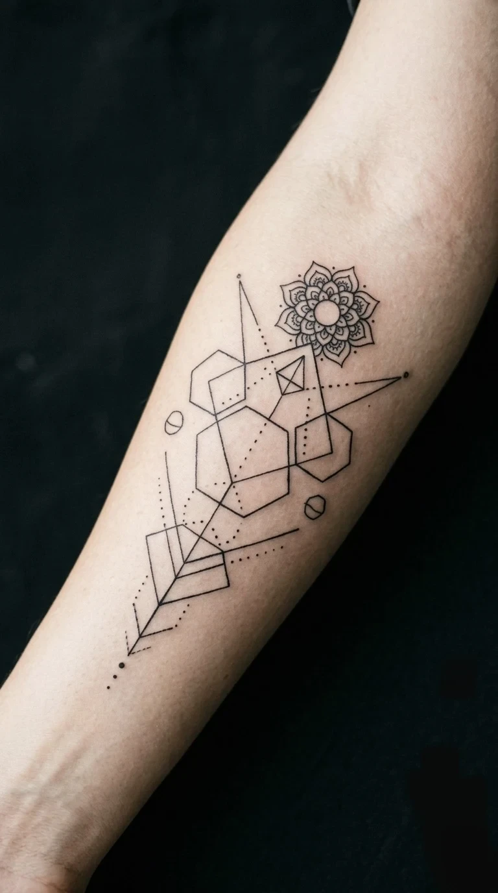
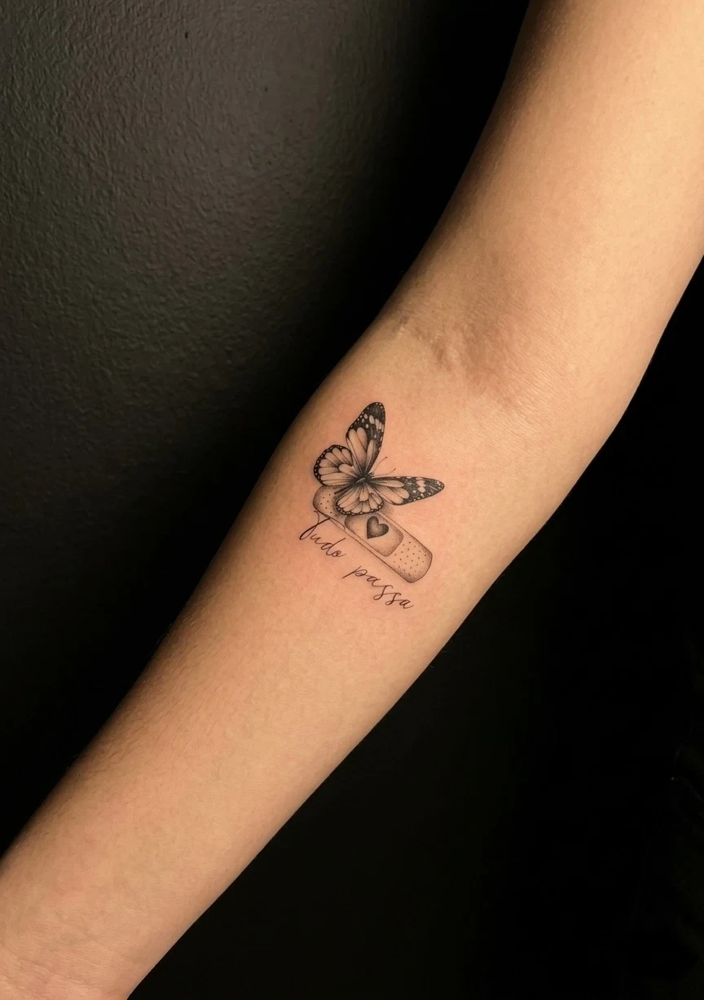
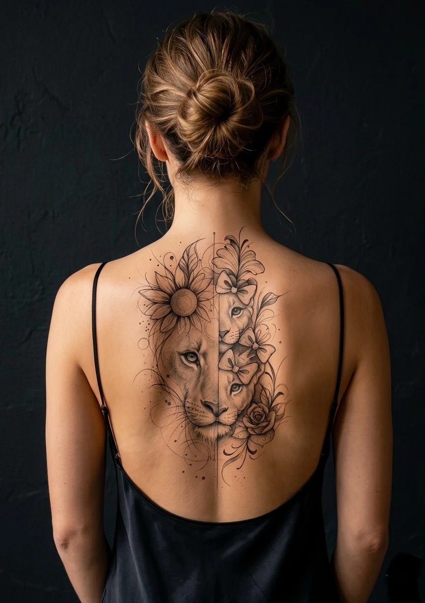
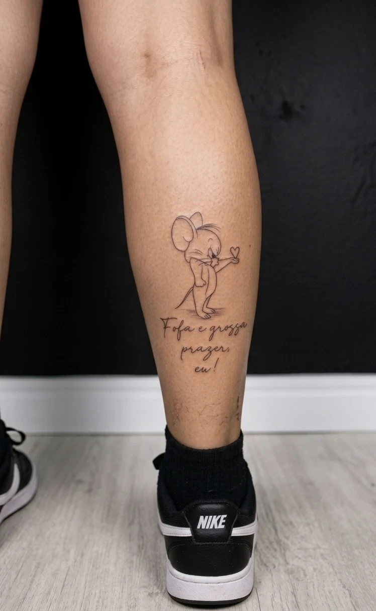
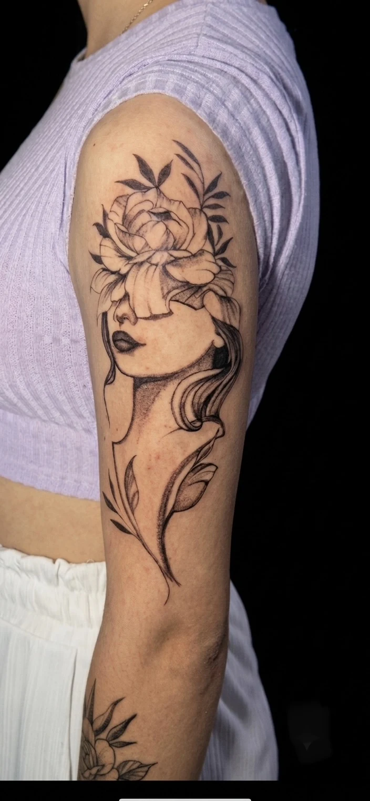
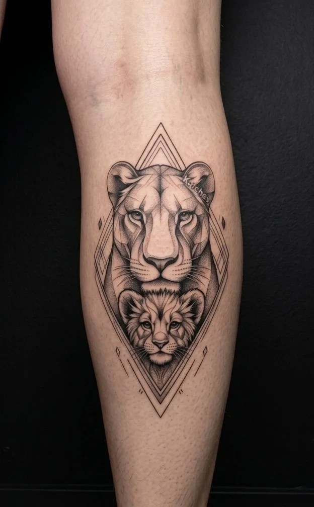

Tatuagem fineline em Belo Horizonte com a precisão que o estilo exige. Carlos Tattoo BH é especialista em traços ultrafinos, florais delicados, lettering e designs geométricos — arte discreta e sofisticada que começa em R$180, com avaliação gratuita em 24h.
O que é tatuagem fineline e por que exige precisão absoluta
Fineline é o estilo que usa traços extremamente finos — geralmente com agulha única ou configurações de 3 a 5 pontos — para criar designs delicados, minimalistas e de alta precisão. O resultado parece desenhado a lápis ou caneta fina diretamente na pele.
A aparente simplicidade é enganosa. Um tremor mínimo, velocidade errada ou pressão inadequada resulta em traços irregulares que ficam evidentes justamente pela ausência de elementos que os escondam. É o estilo que mais expõe a qualidade real do tatuador.
Carlos desenvolveu sua técnica fineline ao longo de 4 anos de aperfeiçoamento específico, com centenas de peças realizadas em BH. Traço constante, limpo e com espessura uniforme do início ao fim — isso só vem de prática real e muita dedicação ao estilo.
Portfólio Fineline — Carlos Tattoo BH
Cada peça criada exclusivamente para o cliente — sem templates. Veja mais no @carlostattoo.bh

Mandala Geométrica · Fineline Ampulheta & Frase · Fineline
Ampulheta & Frase · Fineline

Borboleta · Fineline
Leoa Delicada · Fineline Onça & Frase · Fineline
Onça & Frase · Fineline

Personagem & Frase · Fineline
Retrato & Flores · Fineline
Leoa & Filhote · FinelineEstilos de fineline disponíveis
Cuidados com tatuagem fineline — como preservar os traços
Fineline exige atenção especial no pós-tatuagem. Os traços finos são mais sensíveis ao desbotamento, mas com os cuidados certos a durabilidade é excelente:
- Primeiros 30 dias: lavar suavemente com sabão neutro 2x ao dia, aplicar cicatrizante indicado, não arranhar, evitar piscina e academia nas primeiras 2 semanas.
- Sem exposição solar durante toda a fase de cicatrização (mínimo 30 dias).
- Protetor solar FPS 50+ toda vez que a tatuagem ficar exposta ao sol — para sempre, não só nos primeiros meses. Esse é o maior segredo da durabilidade.
- Hidratação diária com loção sem perfume. Pele hidratada preserva melhor o pigmento.
- Retoque preventivo a cada 3 a 5 anos para manter a definição dos traços. Carlos realiza o primeiro retoque (3 meses) sempre incluso no valor.
Tabela de preços — tatuagem fineline em BH
| Tamanho | Tempo estimado | Faixa de preço |
|---|---|---|
| Mini (até 5cm) | 1 a 1,5 hora | R$ 180 – R$ 300 |
| Pequena (5 a 10cm) | 1,5 a 2,5 horas | R$ 300 – R$ 500 |
| Média (10 a 20cm) | 2,5 a 4 horas | R$ 500 – R$ 900 |
| Grande (acima de 20cm) | 4+ horas | R$ 900 – R$ 1.500 |
| Conjunto de mini tattoos | variável | a partir de R$ 400 |
| Braço completo floral | 2 a 3 sessões | R$ 1.200 – R$ 2.000 |
Orçamento gratuito. Retoque nos primeiros 3 meses sempre incluso.
O que dizem os clientes
"Floral delicado na clavícula. Carlos criou um galho com flores minúsculas que parece gravura de livro antigo. Precisão absurda — e o traço ainda está perfeito depois de 1 ano."
"Mandala geométrica na costela. As linhas são tão finas e uniformes que parece impresso. Fui de Santa Luzia e valeu muito. Carlos é referência em fineline no BH."
"Conjunto de mini tattoos no antebraço. Cada uma com um nível de detalhe incrível. O Carlos entendeu exatamente o que eu queria e entregou além do esperado."
Atendemos toda a Grande BH
Como Chegar — Carlos Tattoo BH
Endereço: Rua Maria de Lourdes da Cruz, 378 · Bairro Mantiqueira · Belo Horizonte, MG
De Contagem: ~15 min pelo Anel Rodoviário | De Venda Nova: ~10 min pela Av. Vilarinho
De Santa Luzia: ~20 min pela Av. Cristiano Machado | De Lagoa Santa: ~30 min pela MG-020
Horário: Seg–Sex 10h–19h · Sáb 10h–18h · (31) 98339-1576
Abrir no Google Maps →Perguntas frequentes — tatuagem fineline em BH
Avaliação gratuita · A partir de R$180 · Resposta em 24h
Preencha o formulário com sua ideia e referências. Carlos analisa pessoalmente e responde com projeto e orçamento.
QUERO MINHA TATUAGEM FINELINE